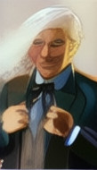
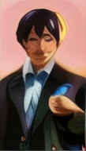
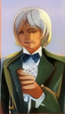
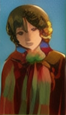

Welcome to the Doctor Who Companion, here you can keep track of all Doctor Who episodes you have watched
There are four Doctors in Doctor Who




"There's no point being grown up if you can't be childish sometimes" - Fourth Doctor
Thing is, I never carry money, so I just popped back in time, borrowed a quid off a really lovely man.
Geoffrey Noble, his name was. Have it, he said. Have that on me.